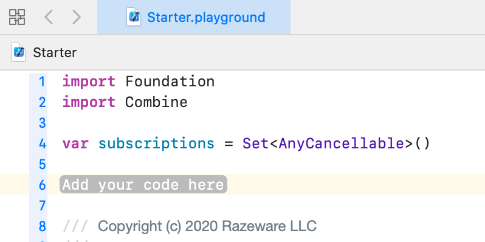
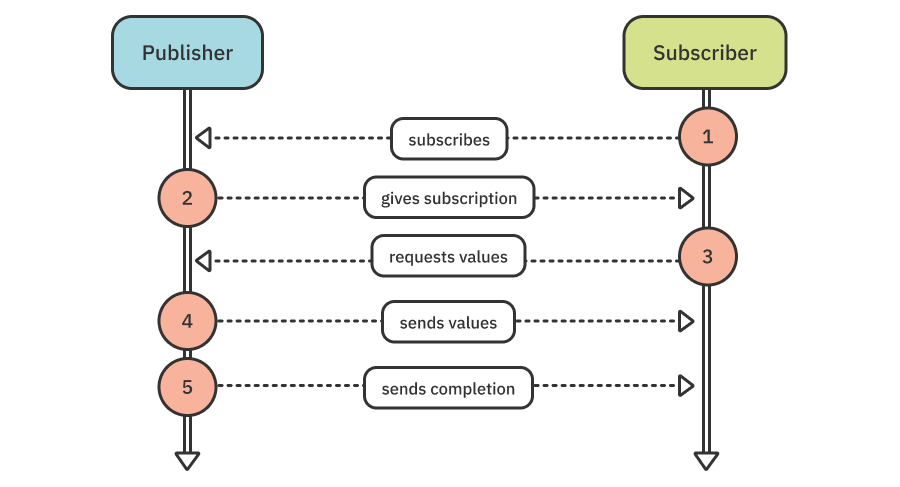
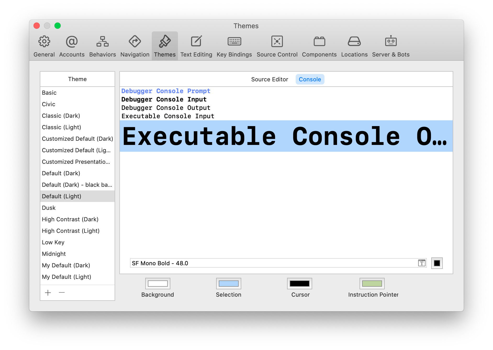

第2章：发布者和订阅者¶
现在你已经学会了Combine的一些基本概念，是时候进入Combine的两个核心组件--发布者和订阅者了。
在这一章中，你将试验各种创建发布者和订阅者的方法，这样，当你在本书中需要这样做的时候，你就会感到很自如。
Note
本书各章中你将使用的Playground和项目有启动版和最终版。启动版是为你输入每个例子和挑战的代码而准备的。如果你遇到困难，你可以在最后或在途中将你的工作与最终版本进行比较。
开始¶
在本章中，你将使用一个导入Combine的Xcode Playground。打开projects文件夹中的Starter.playground，你会看到下面的内容：

在项目导航器中打开Source（View ▸ Navigators ▸ Show Project Navigator and twist down the Combine playground page），并选择SupportCode.swift。它包含以下辅助函数example(of:)：
public func example(of description: String,
action: () -> Void) {
print("\n——— Example of:", description, "———")
action()
}
在整本书中，你将使用这个函数来封装你将在plauyground中工作的每个例子。
然而，在你开始玩这些例子之前，你首先需要更详细地了解一下发布者、订阅者和订阅的情况。它们构成了Combine的基础，使你能够发送和接收数据，通常是异步的。
你好，发布者¶
Combine的核心是Publisher协议。这个协议定义了一个类型的要求，即能够在一段时间内向一个或多个订阅者传输一连串的值。换句话说，一个发布者发布或发出的事件可以包括感兴趣的值。
订阅一个发布者的想法类似于从NotificationCenter订阅一个特定的通知。通过NotificationCenter，你表达了对某些事件的兴趣，然后每当有新的事件发生时，你就会得到异步通知。
事实上，它们是如此相似，以至于NotificationCenter有一个名为publisher(for:object:)的方法，提供了一个可以发布通知的Publisher类型。
要在实践中检查这一点，请回到启动器的Playground，用以下代码替换Add your code here的占位符：
example(of: "Publisher") {
// 1
let myNotification = Notification.Name("MyNotification")
// 2
let publisher = NotificationCenter.default
.publisher(for: myNotification, object: nil)
}
在这个代码中，你：
- 创建一个通知名称。
- 访问
NotificationCenter的默认实例，调用它的publisher(for:object:)方法，并将其返回值分配给一个本地常量。
选项点击publisher(for:object:)，你会看到它返回一个Publisher，当默认的通知中心广播一个通知时，它就会发射一个事件。
那么，当一个通知中心已经能够在没有发布者的情况下广播它的通知时，发布通知有什么意义呢？很高兴你问了这个问题!
你可以把这些类型的方法看作是从旧的异步API到新的替代方法的桥梁--如果你愿意的话，这是一种结合它们的方式。
一个发布者会发出两种事件：
Values，也被称为元素。- 一个完成事件。
一个发布者可以发出零个或更多的值，但只有一个完成事件，它可以是一个正常的完成事件，也可以是一个错误。一旦一个发布者发射了一个完成事件，它就完成了，不能再发射任何事件了。
Note
在这个意义上，发布者有点类似于Swift迭代器。一个非常有数值的区别是，Publisher的完成可以是成功的，也可以是失败的，而且你需要主动从迭代器中提取值，而Publisher则是将值推送给订阅者。
接下来，你将通过使用NotificationCenter来观察和发布通知来结束当前的例子。当你不再对接收该通知感兴趣时，你也将取消该观察者的注册。
将下面的代码添加到你在这个例子的闭包中已经有的内容：
// 3
let center = NotificationCenter.default
// 4
let observer = center.addObserver(
forName: myNotification,
object: nil,
queue: nil) { notification in
print("Notification received!")
}
// 5
center.post(name: myNotification, object: nil)
// 6
center.removeObserver(observer)
有了这个代码，你就可以：
- 获得默认通知中心的手柄。
- 创建一个观察者，用你之前创建的名字来监听通知。
- 发布一个带有该名称的通知。
- 从通知中心移除观察者。
运行Playground。你会看到这个输出被打印到控制台：
——— Example of: Publisher ———
Notification received!
这个例子的标题有点误导性，因为输出实际上不是来自发布者。要做到这一点，你需要一个订阅者。
你好，订阅者¶
Subscriber是一个协议，它定义了一个类型能够从一个发布者那里接收输入的要求。你很快就会深入研究符合Publisher和Subscriber协议的问题；现在，你将专注于基本流程。
在Playground上添加一个新的例子，它的开头与前面的例子一样：
example(of: "Subscriber") {
let myNotification = Notification.Name("MyNotification")
let center = NotificationCenter.default
let publisher = center.publisher(for: myNotification, object: nil)
}
如果你现在发布一个通知，发布者就不会发射它，因为还没有订阅者来订阅者这个通知。
用sink(_:_:)订阅¶
继续前面的例子，添加以下代码：
// 1
let subscription = publisher
.sink { _ in
print("Notification received from a publisher!")
}
// 2
center.post(name: myNotification, object: nil)
// 3
subscription.cancel()
有了这个代码，你就可以：
- 通过在发布者上调用
sink来创建一个订阅。 - 发布通知。
- 取消订阅。
不要让sink方法名称的晦涩给你带来沉没的感觉。选择点击sink，你会发现它提供了一种简单的方法，可以用闭包来附加一个订阅者，处理来自发布者的输出。在这个例子中，你只是打印了一条信息来表明收到了通知。你很快就会学到更多关于取消订阅的知识。
运行这个玩法，你会看到以下内容：
——— Example of: Publisher ———
Notification received from a publisher!
sink运算符将继续接收与发布者发出的相同数量的值--这就是所谓的无限需求。尽管你在前面的例子中忽略了它们，sink操作符实际上提供了两个闭包：一个处理接收完成事件（成功或失败），一个处理接收值。
要尝试这些，请将这个新的例子添加到你的Playground：
example(of: "Just") {
// 1
let just = Just("Hello world!")
// 2
_ = just
.sink(
receiveCompletion: {
print("Received completion", $0)
},
receiveValue: {
print("Received value", $0)
})
}
在这里，你：
- 使用
Just创建一个发布者，它让你从一个单一的值中创建一个发布者。 - 为发布者创建一个订阅，为每个收到的事件打印一条消息。
运行Playground。你会看到下面的情况：
——— Example of: Just ———
Received value Hello world!
Received completion finished
点击Just，快速帮助解释说，它是一个发布者，向每个订阅者发布一次输出，然后就结束了。
尝试添加另一个订阅者，在你的例子的末尾添加以下代码：
_ = just
.sink(
receiveCompletion: {
print("Received completion (another)", $0)
},
receiveValue: {
print("Received value (another)", $0)
})
运行Playground。如其所言，Just会高兴地将其输出精确地发射给每个新用户，然后结束。
Received value (another) Hello world!
Received completion (another) finished
使用assign(to:on:)进行订阅¶
除了sink，内置的assign(to:on:)操作符使你能够将收到的值分配给一个对象的符合KVO的属性。
添加这个例子，看看它是如何工作的：
example(of: "assign(to:on:)") {
// 1
class SomeObject {
var value: String = "" {
didSet {
print(value)
}
}
}
// 2
let object = SomeObject()
// 3
let publisher = ["Hello", "world!"].publisher
// 4
_ = publisher
.assign(to: \.value, on: object)
}
从头开始：
- 定义一个具有
didSet属性观察者的类，该观察者打印新值。 - 创建一个该类的实例。
- 从一个字符串数组中创建一个发布者。
- 订阅发布者，将收到的每个值分配给对象的
value属性。
运行Playground，你会看到打印出来的：
——— Example of: assign(to:on:) ———
Hello
world!
Note
在后面的章节中，你会看到assign(to:on:)在处理UIKit或AppKit应用程序时特别有用，因为你可以直接给标签、文本视图、复选框和其他UI组件赋值。
用assign(to:)重新发布¶
有一个assign操作符的变种，你可以用它来重新发布由发布者通过另一个标有@Published属性包装器的属性发出的值。要尝试这个方法，请将这个新的例子添加到你的Playground：
example(of: "assign(to:)") {
// 1
class SomeObject {
@Published var value = 0
}
let object = SomeObject()
// 2
object.$value
.sink {
print($0)
}
// 3
(0..<10).publisher
.assign(to: &object.$value)
}
有了这个代码，你就可以：
- 定义并创建一个类的实例，该类有一个用
@Published属性包装器注解的属性，除了可以作为普通属性访问外，还为value创建了一个发布者。 - 在
@Published属性上使用$前缀，以获得对其底层发布者的访问，订阅它，并打印出收到的每个值。 - 创建一个数字的发布者，并将它发出的每个值分配给
object的value发布者。注意使用&来表示对属性的inout引用。
assign(to:)操作符不返回AnyCancellable标记，因为它在内部管理生命周期，并在@Published属性释放时取消了订阅。
你可能会问，与简单地使用assign(to:on:)相比，这有什么用？考虑一下下面的例子（你不需要把这个加入到Playground）。
class MyObject {
@Published var word: String = ""
var subscriptions = Set<AnyCancellable>()
init() {
["A", "B", "C"].publisher
.assign(to: \.word, on: self)
.store(in: &subscriptions)
}
}
在这个例子中，使用assign(to:\.word, on:self)并存储产生的AnyCancellable导致了一个强引用循环。用assign(to:on:)代替assign(to: &$word)可以防止这个问题。
现在你将专注于使用sink操作符，但你将在第8章"实践中"了解更多关于@Published属性的使用：项目"拼贴"，以及后面的章节。
你好，Cancellable¶
当订阅者完成其工作并不再想从发布者那里接收值时，取消订阅是一个好主意，以释放资源并停止任何相应的活动发生，如网络调用。
订阅返回一个AnyCancellable的实例作为"取消令牌"，这使得当你完成订阅时可以取消它。AnyCancellable符合Cancellable协议，它需要cancel()方法正是为了这个目的。
在前面的订阅者例子的底部，你添加了代码subscription.cancel()。你能够在订阅中调用cancel()，因为Subscription协议继承自Cancellable。
如果你没有明确地在一个订阅上调用cancel()，它将继续下去，直到发布者完成，或者直到正常的内存管理导致存储的订阅去初始化。在这一点上，它为你取消了订阅。
Note
在Playground中忽略一个订阅的返回值也是可以的（例如，_ = just.sink...）。然而，有一点需要注意：如果你不在完整的项目中存储一个订阅，那么一旦程序流退出创建它的范围，该订阅就会被取消
这些是很好的例子，但在幕后还有很多事情要做。现在是时候揭开帷幕，了解更多关于Combine中发布者、订阅者和订阅的角色。
了解发生了什么事¶
他们说一张图片胜过千言万语，所以让我们用一张图片来解释发布者和订阅者之间的相互作用：

走过这个UML图：
- 订阅者向发布者订阅。
- 发布者创建一个订阅，并把它交给订阅者。
- 订阅者请求数值。
- 发布者发送数值。
- 发布者发送一个完成。
Note
上图提供了一个正在发生的事情的简化概述。稍后，你将在第18章"自定义发布者与处理背压"中对这个过程有更深入的了解。
看看Publisher协议和它最重要的扩展之一：
public protocol Publisher {
// 1
associatedtype Output
// 2
associatedtype Failure : Error
// 4
func receive<S>(subscriber: S)
where S: Subscriber,
Self.Failure == S.Failure,
Self.Output == S.Input
}
extension Publisher {
// 3
public func subscribe<S>(_ subscriber: S)
where S : Subscriber,
Self.Failure == S.Failure,
Self.Output == S.Input
}
下面我们来仔细看看：
- 发布者所能产生的数值类型。
- 发布者可能产生的错误类型，如果发布者保证不产生错误，则为
Never。 - 订阅者在一个发布者上调用
subscribe(_:)来附加到它。 subscribe(_:)的实现将调用receive(subscriber:)来将订阅者附加到发布者上，即创建一个订阅。
关联类型是发布者的接口，订阅者必须与之匹配才能创建一个订阅。现在，看看Subscriber协议：
public protocol Subscriber: CustomCombineIdentifierConvertible {
// 1
associatedtype Input
// 2
associatedtype Failure: Error
// 3
func receive(subscription: Subscription)
// 4
func receive(_ input: Self.Input) -> Subscribers.Demand
// 5
func receive(completion: Subscribers.Completion<Self.Failure>)
}
下面我们来仔细看看：
- 订阅者可以收到的数值类型。
- 用户可以收到的错误类型；如果用户不会收到错误，则为
Never。 - 发布者在订阅者身上调用
receive(subscription:)来给它订阅。 - 发布者对订阅者调用
receive(_:)，向其发送它刚刚发布的新值。 - 发布者在订阅者上调用
receive(completion:)，告诉它已经完成了数值的生产，可以是正常的，也可以是由于错误。
发布者和订阅者之间的连接是订阅。这里是Subscription协议：
public protocol Subscription: Cancellable, CustomCombineIdentifierConvertible {
func request(_ demand: Subscribers.Demand)
}
用户调用request(_:)来表示它愿意接收更多的值，最多不超过一个最大数或无限数。
Note
我们把订户说明它愿意接收多少数值的概念称为背压管理。如果没有它，或者其他策略，一个订阅者可能会被来自发布者的更多的值淹没，超过它所能处理的。
在subscriber中，注意receive(_:)返回一个Demand。即使subscription.request(_:)设置了订阅者愿意接收的初始最大数值，你也可以在每次收到新数值时调整这个最大数值。
Note
在subscriber.receive(_:)中调整max是加法的，即新的max值被添加到当前的max中。max值必须是正值，传递一个负值将导致fatalError。这意味着，每次收到新的值时，你可以增加原来的max，但不能减少它。
创建一个自定义订阅者¶
是时候把你刚刚学到的东西用于实践了。把这个新的例子添加到你的Playground：
example(of: "Custom Subscriber") {
// 1
let publisher = (1...6).publisher
// 2
final class IntSubscriber: Subscriber {
// 3
typealias Input = Int
typealias Failure = Never
// 4
func receive(subscription: Subscription) {
subscription.request(.max(3))
}
// 5
func receive(_ input: Int) -> Subscribers.Demand {
print("Received value", input)
return .none
}
// 6
func receive(completion: Subscribers.Completion<Never>) {
print("Received completion", completion)
}
}
}
你在这里所做的是：
- 通过范围的
publisher属性创建一个整数的发布者。 - 定义一个自定义的订阅者，
IntSubscriber。 - 实现类型别名，指定这个订阅者可以接收整数输入，并且永远不会收到错误。
- 实现所需的方法，从
receive(subscription:)开始，由发布者调用；在该方法中，对订阅者调用.require(_:)，指定订阅者愿意在订阅时接收最多三个值。 - 打印每个收到的值，并返回
.none，表示订阅者不会调整其需求；.none相当于.max(0)。 - 打印完成事件。
为了让发布者发布任何东西，它需要一个订阅者。在例子的末尾添加以下内容：
let subscriber = IntSubscriber()
publisher.subscribe(subscriber)
在这段代码中，你创建了一个与发布者的Output和Failure类型相匹配的订阅者。然后你告诉发布者要订阅或附加该订阅者。
运行Playground。你会看到以下内容被打印到控制台：
——— Example of: Custom Subscriber ———
Received value 1
Received value 2
Received value 3
你没有收到一个完成事件。这是因为发布者的值是有限的，而你指定的需求是.max(3)。
在你的自定义订阅者的receive(_:)中，试着将.none改为.unlimited，这样你的receive(_:)方法看起来像这样：
func receive(_ input: Int) -> Subscribers.Demand {
print("Received value", input)
return .unlimited
}
再次运行该Playground机。这一次你会看到输出包含所有的值，还有完成事件：
——— Example of: Custom Subscriber ———
Received value 1
Received value 2
Received value 3
Received value 4
Received value 5
Received value 6
Received completion finished
试着把.unlimited改为.max(1)，然后再次运行这个Playground。
你会看到与返回.unlimited时相同的输出，因为每次收到事件时，你都指定要将max增加1。
把.max(1)改回.none，并把publisher的定义改成字符串数组。替换：
let publisher = (1...6).publisher
为:
let publisher = ["A", "B", "C", "D", "E", "F"].publisher
运行Playground。你得到一个错误，subscribe方法要求类型String和IntSubscriber.Input（即Int）是相等的。你得到这个错误是因为发布者的Output和Failure相关类型必须与订阅者的Input和Failure类型相匹配，以便在两者之间创建一个订阅。
把publisher定义改回原来的整数范围来解决这个错误。
你好，Future¶
就像你可以使用Just来创建一个发布者，向订阅者发送一个单一的值，然后完成，Future可以用来异步产生一个单一的结果，然后完成。把这个新的例子添加到你的Playground：
example(of: "Future") {
func futureIncrement(
integer: Int,
afterDelay delay: TimeInterval) -> Future<Int, Never> {
}
}
在这里，你创建了一个工厂函数，返回一个类型为Int和Never的future；也就是说，它将发出一个整数，并且永远不会失败。
你还添加了一个subscriptions集合，你将在其中存储对例子中的Future的订阅。对于长期运行的异步操作，不存储订阅将导致在当前代码范围结束后立即取消订阅。在Playground的例子中，这将是立即的。
接下来，填充函数的Subject以创建future：
Future<Int, Never> { promise in
DispatchQueue.global().asyncAfter(deadline: .now() + delay) {
promise(.success(integer + 1))
}
}
这段代码定义了future，它创建了一个promise，然后你使用函数调用者指定的值来执行这个promise，在delay之后增加integer。
一个Future是一个发布者，它最终会产生一个单一的值并结束，否则就会失败。它通过在有值或错误时调用一个闭包来实现，而这个闭包实际上就是承诺。命令点击Future，选择跳转到定义。你会看到下面的内容：
final public class Future<Output, Failure> : Publisher
where Failure: Error {
public typealias Promise = (Result<Output, Failure>) -> Void
...
}
Promise是一个闭包的类型别名，它接收一个Result，包含Future发布的单个值，或者一个错误。
回到主Playground页面，在futureIncrement的定义后添加以下代码：
// 1
let future = futureIncrement(integer: 1, afterDelay: 3)
// 2
future
.sink(receiveCompletion: { print($0) },
receiveValue: { print($0) })
.store(in: &subscriptions)
在这里，你：
- 使用你先前创建的工厂函数创建一个
Future，指定在三秒钟的延迟后递增你传递的整数。 - 订阅并打印收到的值和完成事件，并将产生的订阅存储在
subscriptions集合中。你会在本章后面学到更多关于在集合中存储订阅的知识，所以如果你不完全理解这个例子的这一部分，也不用担心。
运行这个Playground。你会看到打印的例子标题，然后是延迟三秒后的future的输出：
——— Example of: Future ———
2
finished
通过在Playground上输入以下代码，为Future添加第二个订阅：
future
.sink(receiveCompletion: { print("Second", $0) },
receiveValue: { print("Second", $0) })
.store(in: &subscriptions)
在运行Playground之前，在futureIncrement函数中的DispatchQueue块之前立即插入以下打印语句：
print("Original")
运行Playground。在指定的延迟后，第二个订阅者收到相同的值。future不会重新执行它的承诺；相反，它分享或重复它的输出。
——— Example of: Future ———
Original
2
finished
Second 2
Second finished
代码在订阅发生之前立即打印Original。 这是因为future是“贪婪的”，也就是说，一旦它被创造出来，就会立即执行。 它不需要像普通发布者那样的“懒惰”订阅者。
在过去的几个例子中，你一直在使用有有限数量的值要发布的发布者，这些发布者是按顺序同步发布的。
你开始的那个通知中心的例子是一个发布者的例子，它可以无限期地、异步地持续发布数值，前提是：
- 底层的通知发送者会发出通知。
- 有指定通知的订阅者。
如果有一种方法可以让你在自己的代码中做同样的事情呢？嗯，事实证明，有的，在继续之前，请注释掉整个Future的例子，这样，每次运行Playground时，Future就不会被调用--否则，它的延迟输出会在最后一个例子之后被打印出来。
你好，Subject¶
你已经学会了如何使用发布者和订阅者，甚至如何创建你自己的自定义订阅者。在本书的后面，你将学习如何创建自定义发布者。不过现在，在你和当之无愧的<insert your favorite beverage>休息之间还有几件事。首先是一个Subject。
Subject作为一个中间人，使非Combine指令性代码能够向Combine订阅者发送值。<favorite beverage>是不会自己喝的，所以现在是时候开始工作了！
把这个新的例子添加到你的Playground：
example(of: "PassthroughSubject") {
// 1
enum MyError: Error {
case test
}
// 2
final class StringSubscriber: Subscriber {
typealias Input = String
typealias Failure = MyError
func receive(subscription: Subscription) {
subscription.request(.max(2))
}
func receive(_ input: String) -> Subscribers.Demand {
print("Received value", input)
// 3
return input == "World" ? .max(1) : .none
}
func receive(completion: Subscribers.Completion<MyError>) {
print("Received completion", completion)
}
}
// 4
let subscriber = StringSubscriber()
}
有了这个代码，你就可以：
- 定义一个自定义的错误类型。
- 定义一个自定义订阅者，接收字符串和
MyError错误。 - 根据收到的值调整需求。
- 创建一个自定义订阅者的实例。
当输入是"World"时，在receive(_:)中返回.max(1)，结果是新的最大值被设置为3（原始最大值加1）。
除了定义一个自定义错误类型和根据接收到的值调整需求之外，这里没有什么新的东西。接下来是更有趣的部分。
把这段代码添加到例子中：
// 5
let subject = PassthroughSubject<String, MyError>()
// 6
subject.subscribe(subscriber)
// 7
let subscription = subject
.sink(
receiveCompletion: { completion in
print("Received completion (sink)", completion)
},
receiveValue: { value in
print("Received value (sink)", value)
}
)
这个代码：
- 创建一个
PassthroughSubject的实例，类型为String和你定义的自定义错误类型。 - 将订阅者订阅为
Subject。 - 使用
sink创建另一个订阅。
Passthrough Subject使你能够按需发布新值。他们会很高兴地传递这些值和一个完成事件。与任何发布者一样，你必须事先声明它可以发布的值和错误的类型；订阅者必须将这些类型与它的输入和失败类型相匹配，以便订阅该Passthrough Subject。
现在你已经创建了一个可以发送值的Passthrough Subject和接收值的订阅，是时候发送一些值了。在你的例子中添加以下代码：
subject.send("Hello")
subject.send("World")
这将使用Subject的send方法发送两个值（一次一个）。
运行这个Playground。你会看到：
——— Example of: PassthroughSubject ———
Received value Hello
Received value (sink) Hello
Received value World
Received value (sink) World
每个订阅者都会收到他们发布的数值。
添加以下代码：
// 8
subscription.cancel()
// 9
subject.send("Still there?")
在这里，你：
- 取消第二次订阅。
- 发送另一个值。
运行Playground。正如你可能已经预料到的那样，只有第一个订阅者收到该值。发生这种情况是因为你之前取消了第二个订阅者的订阅：
——— Example of: PassthroughSubject ———
Received value Hello
Received value (sink) Hello
Received value World
Received value (sink) World
Received value Still there?
将这段代码添加到示例中：
subject.send(completion: .finished)
subject.send("How about another one?")
运行Playground。第二个订阅者没有收到"How about another one?"的值，因为它在Subject发送值之前就收到了完成事件。第一个订阅者没有收到完成事件或值，因为它的订阅先前被取消了。
——— Example of: PassthroughSubject ———
Received value Hello
Received value (sink) Hello
Received value World
Received value (sink) World
Received value Still there?
Received completion finished
在发送完成事件的那一行之前立即添加以下代码。
subject.send(completion: .failure(MyError.test))
再次运行该Playground。你会看到以下内容被打印到控制台：
——— Example of: PassthroughSubject ———
Received value Hello
Received value (sink) Hello
Received value World
Received value (sink) World
Received value Still there?
Received completion failure(...MyError.test)
Note
为了便于阅读，错误类型被缩写了。
第一个订户接收错误，但不接收错误之后发送的完成事件。这表明一旦发布者发送了一个完成事件--无论是正常完成还是错误--它就完成了，就像在fini中一样，失败了！使用PassthroughSubject传递值是将命令式代码连接到Combine声明式世界的一种方法。然而，有时候，您可能还想查看命令式代码中发布者的当前值-为此，您有一个恰当命名的Subject：CurrentValueSubject。
你可以在AnyCancellable的集合中存储多个订阅，而不是将每个订阅作为一个值来存储。然后，该集合将在集合去初始化前不久自动取消添加到它的每个订阅。
把这个新的例子添加到你的Playground：
example(of: "CurrentValueSubject") {
// 1
var subscriptions = Set<AnyCancellable>()
// 2
let subject = CurrentValueSubject<Int, Never>(0)
// 3
subject
.sink(receiveValue: { print($0) })
.store(in: &subscriptions) // 4
}
以下是正在发生的事情：
- 创建一个
subscriptions集。 - 创建一个
CurrentValueSubject，类型为Int和Never。这将发布整数，并且从不发布错误，初始值为0。 - 创建一个
Subject的订阅，并打印从它收到的值。 - 在
subscriptions集合中存储该订阅（作为inout参数传递，而不是复制）。
你必须用一个初始值来初始化当前的数值Subject；新的订阅者立即获得该值或该Subject发布的最新值。运行Playground，看看这个动作：
——— Example of: CurrentValueSubject ———
0
现在，添加这段代码来发送两个新的值：
subject.send(1)
subject.send(2)
再次运行Playground。这些值也被接收并打印到控制台：
1
2
与Passthrough Subject不同，你可以在任何时候向当前值Subject询问其数值。添加下面的代码来打印出Subject的当前值：
print(subject.value)
正如你可能从Subject的类型名称推断的那样，你可以通过访问其value属性来获得其当前值。运行这个Playground，你会看到2第二次被打印出来。
在一个当前值的Subject上调用send(_:)是发送一个新值的一种方法。另一种方法是给它的value属性分配一个新值。哇，我们刚才是用了所有必要的方法还是什么？添加这段代码：
subject.value = 3
print(subject.value)
运行这个Playground。你会看到2和3各打印了两次--一次是由接收订阅者打印的，另一次是在将该值添加到Subject后打印Subject的value。
接下来，在这个例子的最后，为当前的数值Subject创建一个新的订阅：
subject
.sink(receiveValue: { print("Second subscription:", $0) })
.store(in: &subscriptions)
在这里，你创建一个订阅，并打印收到的值。你还将该订阅存储在subscriptions集合中。
你刚才读到，subscriptions集将自动取消添加到它的订阅，但你如何验证这一点？你可以使用print()操作符，它将把所有发布事件记录到控制台。
在两个订阅中插入print()操作符，在subject和sink之间。每个订阅的开头应该是这样的：
subject
.print()
.sink...
再次运行该Playground，你会看到整个例子的输出如下：
——— Example of: CurrentValueSubject ———
receive subscription: (CurrentValueSubject)
request unlimited
receive value: (0)
0
receive value: (1)
1
receive value: (2)
2
2
receive value: (3)
3
3
receive subscription: (CurrentValueSubject)
request unlimited
receive value: (3)
Second subscription: 3
receive cancel
receive cancel
代码将每个事件与订阅处理程序中打印的值一起打印出来，当你打印Subject的value时。receive cancel事件的出现是因为subscriptions集被定义在这个例子的范围内，所以它在去初始化时取消了它包含的订阅。
所以，你可能想知道，你能不能也给value属性分配一个完成事件？通过添加这段代码试试吧：
subject.value = .finished
没有！这将产生一个错误。一个CurrentValueSubject的value属性只是用于：values。你仍然需要通过使用send(_:)来发送完成事件。将错误的那行代码改为以下内容：
subject.send(completion: .finished)
再次运行该Playground。这一次你会在底部看到以下输出：
receive finished
receive finished
这两个订阅都收到了完成事件，而不是取消事件。既然它们已经完成了，你就不再需要取消这些了。
动态地调整需求¶
你在前面了解到，在Subscriber.receive(_:)中调整需求是加法的。现在你已经准备好在一个更复杂的例子中仔细看看它是如何工作的。把这个新的例子添加到Playground上：
example(of: "Dynamically adjusting Demand") {
final class IntSubscriber: Subscriber {
typealias Input = Int
typealias Failure = Never
func receive(subscription: Subscription) {
subscription.request(.max(2))
}
func receive(_ input: Int) -> Subscribers.Demand {
print("Received value", input)
switch input {
case 1:
return .max(2) // 1
case 3:
return .max(1) // 2
default:
return .none // 3
}
}
func receive(completion: Subscribers.Completion<Never>) {
print("Received completion", completion)
}
}
let subscriber = IntSubscriber()
let subject = PassthroughSubject<Int, Never>()
subject.subscribe(subscriber)
subject.send(1)
subject.send(2)
subject.send(3)
subject.send(4)
subject.send(5)
subject.send(6)
}
这段代码的大部分与你之前在本章中的例子相似，所以你将专注于receive(_:)方法。你不断地从你的自定义订阅者中调整需求：
- 新的
max是4（原max为2+新max为2）。 - 新的
max是5（以前的4+新的1）。 max仍然是5（以前的4+新的0）。
运行Playground，你会看到以下情况：
——— Example of: Dynamically adjusting Demand ———
Received value 1
Received value 2
Received value 3
Received value 4
Received value 5
正如预期的那样，代码发出了五个值，但第六个值没有被打印出来。
在继续前进之前，你还想知道一件重要的事情：向订阅者隐藏关于发布者的细节。
类型擦除¶
有些时候，你想让订阅者订阅接收来自某个发布者的事件，但又不能访问关于该发布者的额外细节。
这最好用一个例子来证明，所以把这个新的例子添加到你的Playground：
example(of: "Type erasure") {
// 1
let subject = PassthroughSubject<Int, Never>()
// 2
let publisher = subject.eraseToAnyPublisher()
// 3
publisher
.sink(receiveValue: { print($0) })
.store(in: &subscriptions)
// 4
subject.send(0)
}
有了这个代码，你就可以：
- 创建一个
Passthrough Subject。 - 从该
Subject创建一个类型擦除的发布者。 - 订阅类型擦除的发布者。
- 通过
Passthrough Subject发送一个新的值。
选择点击publisher，你会看到它的类型是AnyPublisher<Int, Never>。
AnyPublisher是一个类型擦除的结构，符合Publisher协议。类型清除允许你隐藏关于发布者的细节，你可能不想暴露给订阅者--或下游发布者，你将在下一节中了解到这一点。
你现在是否有一点似曾相识的感觉？如果是的话，那是因为你之前看到了另一个类型清除的案例。AnyCancellable是一个符合Cancellable的类型擦除类，它允许调用者取消订阅，而不能访问底层订阅来做诸如请求更多项目的事情。
当你想对发布者使用类型清除时，一个例子是你想使用一对公共和私有属性，允许这些属性的所有者在私有发布者上发送值，而让外部调用者只访问公共发布者进行订阅，但不能发送值。
AnyPublisher没有send(_:)操作符，所以你不能直接向该发布者添加新值。
eraseToAnyPublisher()操作符将提供的发布者包裹在AnyPublisher的一个实例中，隐藏了发布者实际上是一个PassthroughSubject的事实。这也是必要的，因为你不能将Publisher协议特殊化，例如，你不能将类型定义为Publisher<UIImage, Never>。
为了证明publisher是类型擦除的，并且不能使用它发送新值，请在示例中添加以下代码。
publisher.send(1)
你得到的错误是"AnyPublisher<Int, Never>类型的值没有成员send"。在继续前行之前注释掉这行代码。
将Combine发布者与async/await连接起来¶
Swift 5.5中的Combine框架有两个伟大的新增功能，可在iOS 15和macOS 12中使用，帮助你毫不费力地将Combine与Swift中新的async/await语法结合起来。
换句话说--你在本书中学到的所有发布者、future和Subject都可以从你的现代Swift代码中免费使用。
在你的Playground上添加最后一个例子：
example(of: "async/await") {
let subject = CurrentValueSubject<Int, Never>(0)
}
在这个例子中，你将使用一个CurrentValueSubject，但如前所述，API在Future和任何符合Publisher的类型上都是可用的。
你将使用subject来发射元素，并使用for循环来迭代这些元素的异步序列。
你将在一个新的异步任务中订阅这些值。要做到这一点，请添加：
Task {
for await element in subject.values {
print("Element: \(element)")
}
print("Completed.")
}
Task创建一个新的异步任务--在这个代码示例中，闭包代码将与你的其他代码异步运行。
这个代码块中的关键API是你的Subject上的values属性。values返回一个异步序列，其中有Subject或发布者发出的元素。你可以像上面那样在一个简单的for循环中迭代这个异步序列。
一旦发布者完成，无论是成功还是失败，循环就会结束，并在下一行继续执行。
接下来，在当前的例子中也添加这段代码，以发出一些值：
subject.send(1)
subject.send(2)
subject.send(3)
subject.send(completion: .finished)
这将发出1、2和3，然后完成Subject。
这就很好地解决了这个例子--发送finished事件也将结束你的异步任务的循环。再次运行Playground的代码，你会看到这样的输出：
——— Example of: async/await ———
Element: 0
Element: 1
Element: 2
Element: 3
Completed.
在Future的情况下，它发出一个单一的元素（如果有的话），values属性不会有太大的意义。这就是为什么Future有一个value属性，你可以用await来异步获得Future的结果。
做得很好! 你在这一章学到了很多东西，你将在本书的其余部分及以后的工作中运用这些新技能。但不要这么快! 现在是实践你刚刚学到的东西的时候了。所以，在你完成本章的挑战时，给自己拿点<insert your favorite beverage>来享用吧。
挑战¶
完成挑战有助于将你在本章中所学到的知识带回家。在练习文件下载中，有启动版和最终版的挑战。
挑战：创建一个21点牌商¶
打开挑战文件夹中的Starter.playground，在项目导航器中扭下playground页面和Sources。选择SupportCode.swift。
查看本挑战的辅助代码，包括：
- 一个
cards数组，包含52个代表一副标准牌的图元。 - 两个类型别名。
Card是一个String和Int的元组，Hand是一个Card的数组。 Hand的两个辅助属性：cardString和points。- 一个
HandError错误枚举。
在Playground主页面中，在注释// Add code to update dealtHand here，评估从手牌的points属性返回的结果。如果结果大于21，通过dealtHand``Subject发送HandError.busted。否则，发送hand的值。
同样在主Playground页面，在注释// Add subscription to dealtHand here后立即添加代码，以订阅dealtHand并处理接收值和错误。
对于收到的值，打印一个字符串，包含手牌的cardString和points属性的结果。
对于一个错误，打印出来。一个提示：你可以在receivedCompletion块中收到.finished或.failure，所以你要区分这个完成是否是一个失败。
HandError符合CustomStringConvertible，所以打印它将产生一个用户友好的错误信息。你可以像这样使用它：
if case let .failure(error) = $0 {
print(error)
}
呼叫deal(_:)目前通过3，所以你每次运行Playground时都发三张牌。
在真正的21点Playground中，你最初发两张牌，然后你必须决定拿一张或多张额外的牌，称为命中，直到你击中21点或爆掉。对于这个简单的例子，你只是直接拿到三张牌。
看看你破产的次数与你击中21点或留在Playground中的次数有多少。赌城的赔率是对你不利还是怎样？
牌的表情符号字符在控制台中打印时很小。您可以为这个挑战暂时增加可执行控制台输出的字体大小。要做到这一点，请选择Xcode ▸ Preferences... ▸ Themes/Console。
然后，选择可执行的控制台输出，并点击右下方的T按钮，将其改为较大的字体，如48。

解决方案¶
你的表现如何？要完成这个挑战，你需要添加两件事。第一件事是更新dealtHand函数中的发布者，检查手牌的点数，如果超过21点则发送错误：
// Add code to update dealtHand here
if hand.points > 21 {
dealtHand.send(completion: .failure(.busted))
} else {
dealtHand.send(hand)
}
接下来，你需要订阅dealtHand，并打印出收到的值或完成事件（如果是一个错误）：
_ = dealtHand
.sink(receiveCompletion: {
if case let .failure(error) = $0 {
print(error)
}
}, receiveValue: { hand in
print(hand.cardString, "for", hand.points, "points")
})
每次你运行这个Playground，你会得到一个新的手和类似以下的输出：
——— Example of: Create a Blackjack card dealer ———
🃕🃆🃍 for 21 points
21点!
关键点¶
- 发布者在一段时间内向一个或多个订阅者传输一串数值，可以是同步的，也可以是异步的。
- 一个订阅者可以订阅一个发布者来接收数值；但是，订阅者的输入和失败类型必须与发布者的输出和失败类型匹配。
- 有两个内置的操作符，你可以用来订阅发布者。
sink(_:_:)和assign(to:on:)。 - 订阅者每次收到一个值时，可以增加对值的需求，但不能减少需求。
- 为了释放资源并防止不需要的副作用，当你完成后，取消每个订阅。
- 你也可以在
AnyCancellable的实例或集合中存储一个订阅，以便在去初始化时接收自动取消。 - 你可以使用
future来在以后的时间里异步地接收一个单一的值。 Subject是发布者，使外部调用者能够向订阅者异步地发送多个值，无论是否有起始值。- 类型擦除防止调用者能够访问底层类型的额外细节。
- 使用
print()操作符来记录所有的发布事件到控制台，看看发生了什么。
接下来去哪？¶
恭喜你! 通过完成本章的学习，你已经向前迈出了一大步。你学会了如何使用发布者来发送值和完成事件，以及如何使用订阅者来接收这些值和事件。接下来，你将学习如何操作来自发布者的值，以帮助过滤、转换或组合它们。